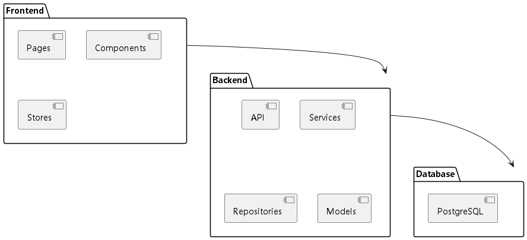
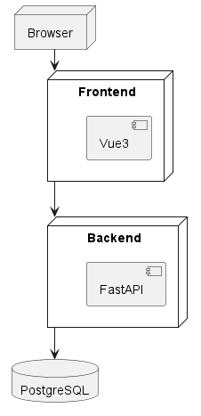
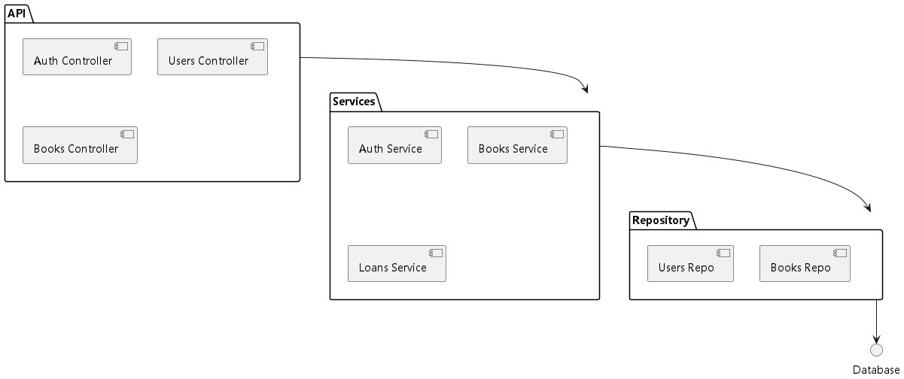
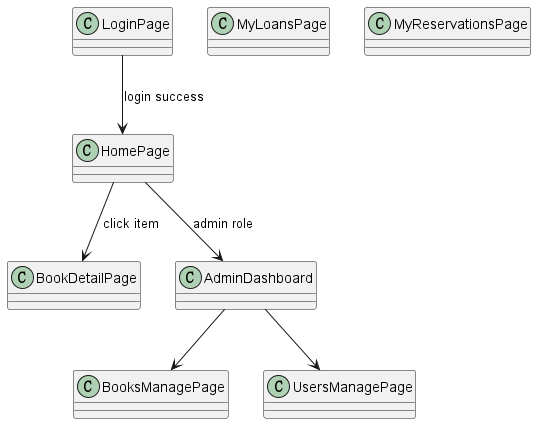
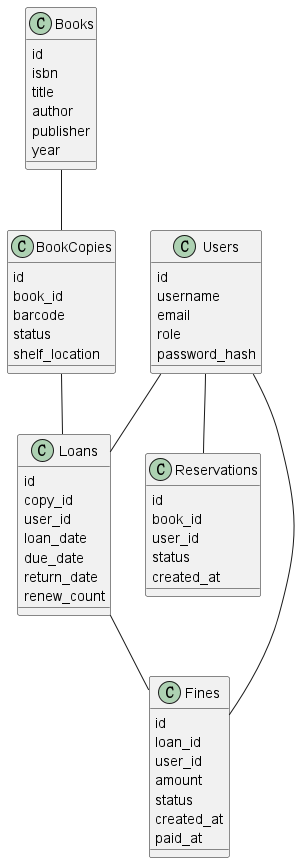
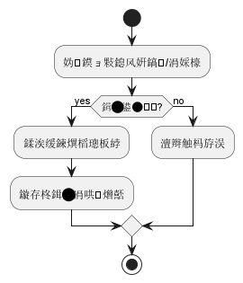
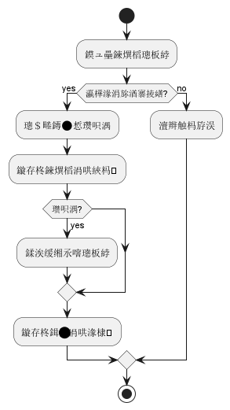

软件工程实验报告（图书馆借阅系统）
1. 需求获取与分析（20%）
- 自然语言需求：见
docs/requirements.md。 - 用例图：

用例详细描述：docs/usecases/*.md（含前置/后置/基本/异常流程）。
2. 软件体系结构设计（20%）
- 包图：

- 部署图：

- 构件图：

- 用户界面设计：界面元素类图与跳转顺序图：


3. 软件详细设计（20%）
- 领域类图：

- 数据设计类图：

- 活动图（借阅/归还/预约）：



- 子系统与构件设计：用户、图书/副本、借阅、预约子系统顺序图与类图（结合上文图示）。
4. 软件实现与测试（20%）
- 后端：
backend/app（FastAPI + SQLAlchemy + Alembic）；核心模块与API详见app/api/v1/*。 - 前端：
frontend/src（Vue3 + Pinia + Router + Axios）。 - 测试计划：单元/集成/端到端；后端集成测试见
backend/tests/*；前端测试：frontend/tests与playwright.config.ts。 - 测试结果与缺陷记录：在开发过程中记录于 Issues/PR（提交记录截图与链接）。
5. 版本管理与过程（10%）
- GitHub 仓库：分支策略（
main/dev/feat/*/fix/*）、提交规范（语义化）。 - CI：
GitHub Actions在.github/workflows/ci.yml；含后端编译检查与前端构建与Lint。
6. 汇报材料（10%）
- PPT：结构见
docs/ppt/outline.md，配套演示步骤与截图。 - 现场答辩：15分钟演示 + 5分钟答疑（建议流程：需求→架构→核心流程→演示→测试→总结）。
7. 运行与部署
- Docker Compose：
ops/docker-compose.yml；环境变量示例：backend/.env.example。 - 本地开发指南：见
README.md。
8. 总结与展望
- 已实现核心借阅流程与预约、罚金。
- 可改进点：预约到书通知自动化、刷新令牌与速率限制、统计图表可视化、权限粒度细化。